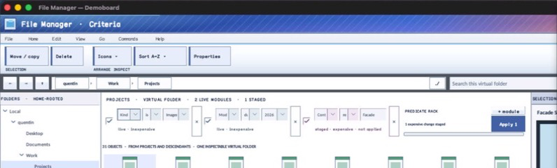

struct · library
InstrumentFieldSpec
InstrumentFieldSpec is caller-owned field identity, label, current value, editor family, choices, validation, proportional width, and required-state configuration.
OBSERVED: bundle 006 instrument value split; M4 build, focused tests, and Screen Sharing passheader-only or distributed
Visual evidence

Ownership and hierarchy
- Hierarchy
- InstrumentFieldSpec
- Declaration
- include/gui_forms/instrument/instrument_types.hpp:19
- Definition
- inline/header-only
Declared methods
No public methods were discovered in this declaration.